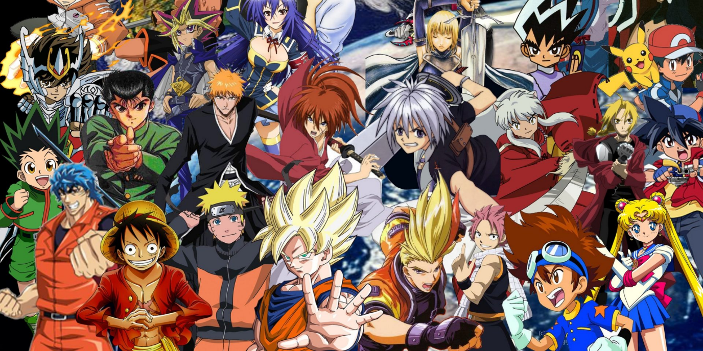

Animes
Os animes crescem no Brasil. Na América Latina, os fãs de anime / mangá são chamados de otakus. A Netflix divulgou um mapa dos países que mais assistem animes no mundo e depois do Japão, o Brasil é um dos países que mais assistem animes. As animações são exibidas no Brasil há mais de 40 anos, e séries como Naruto, One piece tranquilizaram os fãs. No caso dos filmes de animação, por serem principalmente da cultura japonesa, apresentam ao leitor um mundo novo, rico em cultura, tradições e personagens característicos daquele lugar. Anime nada mais é que animação no Japão, mas aqui no Brasil usamos porque eles são muito específicos em mostrar sua cultura e orientação. Eles são inspirados nos chamados mangás, ou seja, quadrinhos feitos no estilo japonês.
A primeira vez foi concluída em 1907, contando a história de um marinheiro. Mas em 1986, apenas tomando Cavaleiros do zodíaco como exemplo, causou uma explosão no mundo dos quadrinhos, e Dragon Ball Z é famoso por jogos e animes. Os quadrinhos são geralmente publicados capítulo por capítulo, e podem ser publicados até 500 calendários anuais. Após a publicação dos capítulos, a história será republicada em uma versão colecionável chamada tankohon, formato em que a maioria dos quadrinhos é distribuída no Brasil. Obviamente, o sucesso dos quadrinhos está na variedade que propõem aos leitores.
Não importa a idade e o sexo que você goste, haverá uma faixa etária específica que combina com você. Por causa dessas subdivisões, é difícil encontrar uma pessoa que não leia mangá no Japão, porque é prático e barato.
Um dos outros grandes fatores que atrai tanto sucesso para esse mundo dos animes são as lições de vida que muitos deles carregam em suas histórias, lições essas que podem ensinar e até mesmo ajudar muitas pessoas, como é o caso de muitas pessoas que alegam ter saído ou melhorado de seus problemas psicológicos como por exemplo a depressão.
Aluno(a): Fellipy Charles